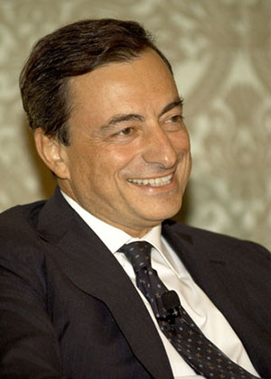

17/10/13 The President of the European Central Bank, Mario Draghi, will be the patron of the 26th class of the Master's Programme in European Union of the Real Instituto de Estudios Europeos.

On the 25th, the 26th edition (2013-14) of the Professional Master's Programme in European Union, organised by the Real Instituto de Estudios Europeos, will begin its sessions in Zaragoza; it includes intensive sessions in Brussels, Strasbourg, Luxembourg and Frankfurt. The Master's Programme was launched in Zaragoza in 1988 by the Minister of Foreign Affairs, Francisco Fernández Ordóñez, and has already trained 588 participants, who work in 41 countries and in international organisations, especially in the European Union. Last year the patron of the 25th class was Manuel Pizarro, and the inaugural and closing lectures were given, respectively, by the Chairman of the ICO, Román Escolano, and the Minister of Foreign Affairs, José Manuel García-Margallo.
The President of the European Central Bank, Dr Mario Draghi, a figure of worldwide standing whom the Real Instituto de Estudios Europeos regards as absolutely crucial in saving the euro and strengthening the ECB, has agreed to be the patron of the 26th class. In the words of its President, Maximiliano Bernad, the Institute thus wishes to honour a senior international official “who has fully grasped the enormous scale of the challenges, who has taken them on with intelligence and determination in the face of pressures that were at times ignoble and even outside the rules, and who has succeeded, for which we Europeans shall always be grateful to him”.
Mario Draghi joins a list of eminent figures who have directly supported the advanced training work of the Real Instituto de Estudios Europeos, and the Master's Programme in particular, among them His Majesty the King, His Royal Highness Prince Felipe, Jacques Delors, Giulio Andreotti, Abel Matutes and Javier Elorza.
Registration for the 2014-2015 edition of this Professional Master's Programme in European Union will open on 4 November.